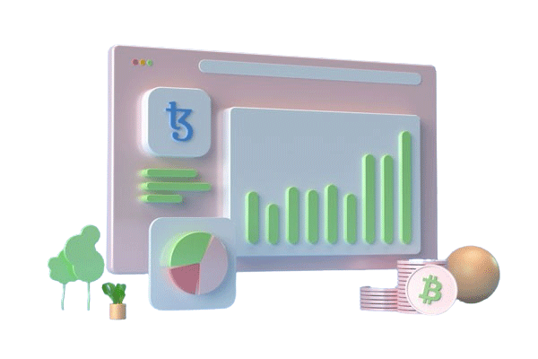

2016
Founded · New York City
Our Story
We got tired of trading in the dark.
TRADEPULSE started on a whiteboard in a tiny Manhattan office, where four analysts kept asking the same question: why do institutions see the market clearly while everyone else squints through noise?
So we built the answer. We spent three years wiring exchange-grade data feeds, training machine-learning models on two decades of history, and staffing a round-the-clock analyst desk — then wrapped it all in one calm, disciplined platform.
Today, 3.2 million investors and hundreds of professional desks run their decisions on TRADEPULSE. The whiteboard is gone. The conviction isn't.
— Amara Okafor
Chief Market Strategist, Co-Founder

The TRADEPULSE trading floor — 24/5, live since day one
▲ 10 Years of Market Coverage